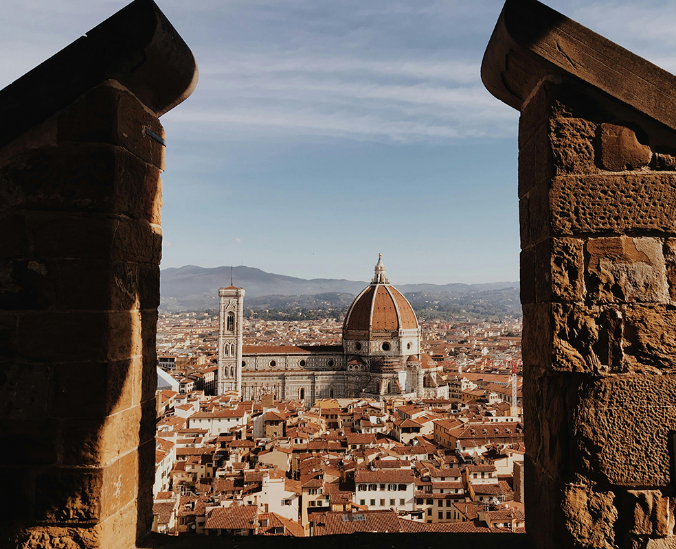
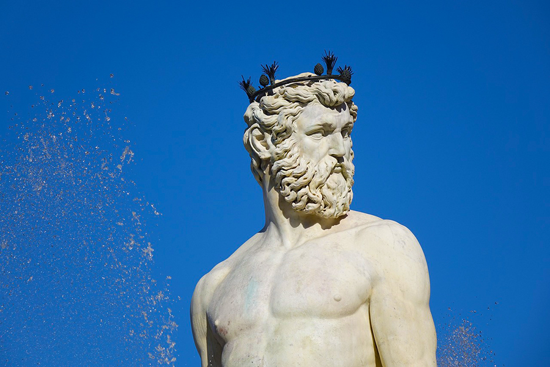
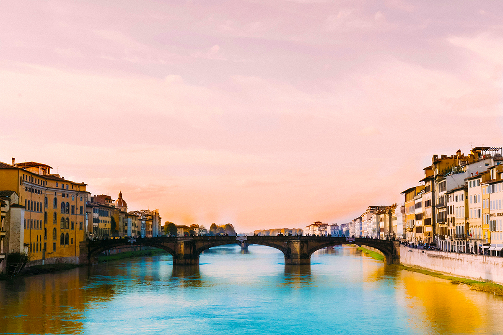
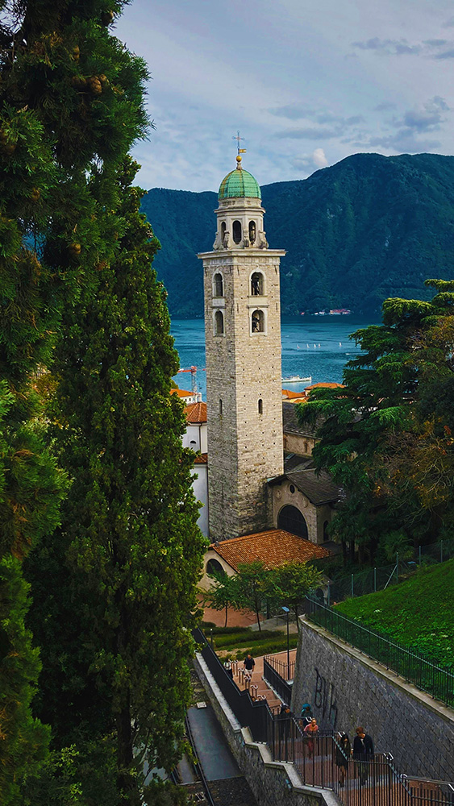
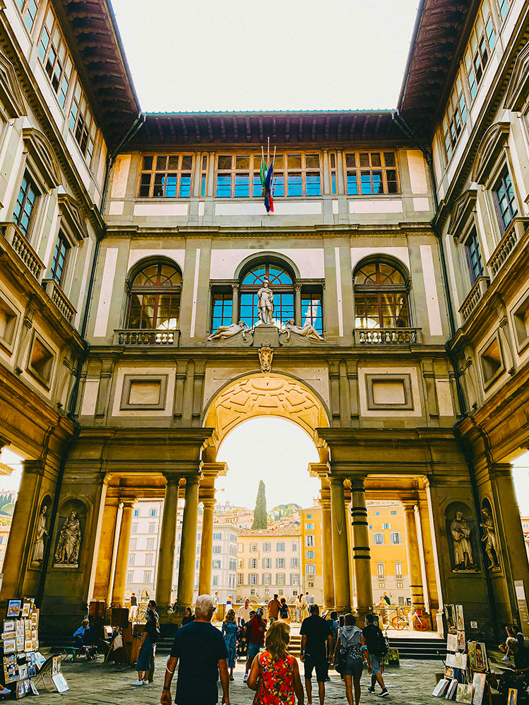

The domed Santa Maria del Fiore cathedral
Also known as The Duomo, is the most iconic structure and crowning jewel of Florence was built by Filippo Brunelleschi.

Bartolomeo Ammanati's Fountain of Neptune
At the heart of the city is Bartolomeo Ammanati's Fountain of Neptune a true masterwork of marble sculpting.

The Ponte Vecchio (Old Bridge)
Its most significant feature, being the numerous shops that are built on the edges of the bridge.

The Church of San Lorenzo
A pristine medieval church and the resting place of the Medici family, the mausoleum within it's walls.

The Uffizi Gallery
One of the finest art museums in the world, being founded with a large donation by the last surviving Medici member of the family.